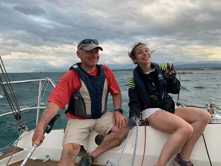

Au magasin
Un vaste assortiment d’articles nautiques, et des textiles pour la mer comme pour tous les jours.
- Accastillage nautique
- Cordages
- Produits d’entretien pour bateaux
- Vêtements techniques et de loisirs
- Chaussures
- Sacs, macramé
- Couteaux suisses
- Maquettes de bateaux
- Wakeboard, wakesurf, ski nautique
Sur mesure
Donnez-nous vos mesures : nous réalisons votre commande dans un délai rapide.
- Amarres sur mesureConseil pour mesurer vos amarres, puis fabrication.
- Sertissage de câbleHaubans, dessertes d’escalier, filières, sécurité.
- Épissures et ligaturesÉpissures de cordes et de câbles, ligatures sur cordages.
- Mains courantes en cordeFabrication sur mesure.
- Conseils techniques et vestimentairesAu comptoir du magasin.
Les marques
Accastillage
Ronstan Lewmar Plastimo Wichard Harken Seldén Jobe Spinlock Clamcleat Crewsaver Besto Danfender Polyform Andersen
Cordages
Lyros Robline Gleistein
Entretien
Starbrite NauticClean Veneziani Levis Epifanes International Nautico Nautix West System
Vêtements
Saint James TBS Musto Gill Zhik Dakine Prolimit Rip Curl
Chaussures
TBS Musto Zhik Aigle Rouchette Jobe Reef
Accessoires
Exped Guy Cotten Jobe Dakine Victorinox Swiza Deejo Opinel Julbo Petzl Fenix
En ce moment
L’automne en boutique
Les nouvelles collections automne-hiver de Saint James et de TBS sont arrivées.
Foil et pump
Rive Marine est revendeur de la marque Indiana pour le matériel de pump.
Sacs en macramé
De petits sacs en macramé, faits main, en vente au magasin.
Une affaire de famille
Établi dans le quartier de Rive, à Nyon, depuis 1969, Rive Marine propose un vaste assortiment d’articles nautiques et un grand choix de textiles, de l’habillement pour marin aux vêtements de tous les jours.
Depuis janvier 2023, Manon Seitz, fille de René Seitz, a repris l’entreprise familiale, tout en continuant à collaborer avec René. Leur politique : offrir le meilleur service et le meilleur assortiment possible.

Passez nous voir
022 361 67 20 Rive Marine, Manon SeitzRue de Rive 19
1260 Nyon
rivemarine@bluewin.ch
Instagram : @rive.marine Voir sur la carte
Mardi au vendredi, samedi, non-stop. Fermé le dimanche et le lundi. L’horaire d’hiver s’applique du 1er octobre au 31 mars.